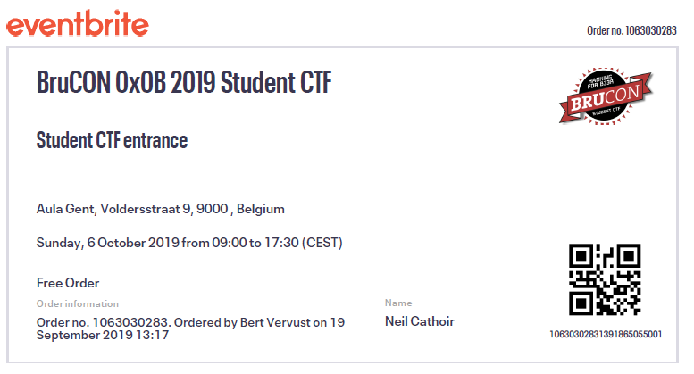
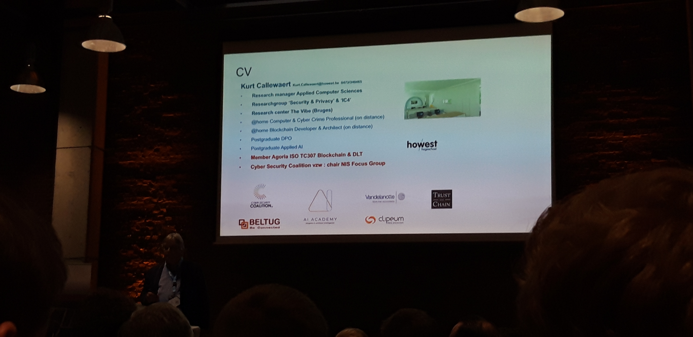
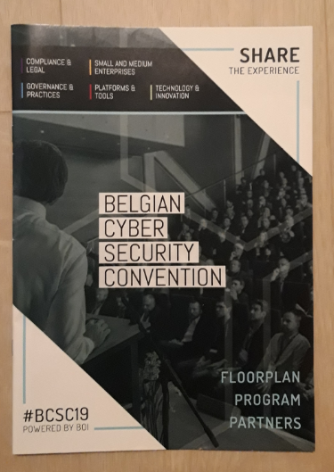
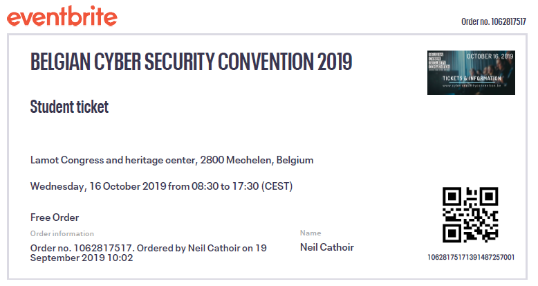
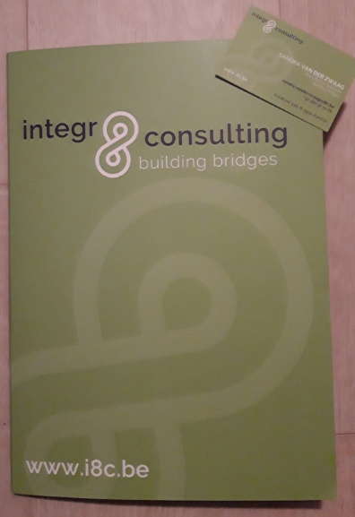
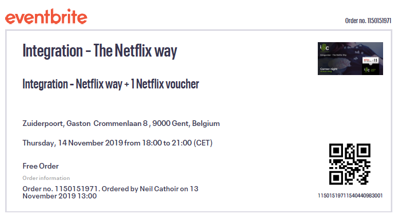

Target public: Students interested in hacking and general IT Security in a fun challenging way.
We started in the morning by setting up in groups all around the room. It was very hard to get started with the CTF because of internet problems. I was also not very prepared, missing a lot of programs and VM's that could have been useful in solving some of the challenges. Finding, downloading and installing tools made me lose a lot of time that could have been spent on finding early challenges.
By the time it was noon, we had only found a few flags, so we took a break. We decided to go for a walk and some food and took our lunch from McDonald's back to the hall.
In the afternoon, we found some more flags, including most of the lockpicking ones and a Lego building challenge. We didn't participate in other physical hacking challenges and decided to focus on the online ones. I, myself, didn't participate in the lockpicking challenges because my team had it handled and I preferred the online challenges.
We didn't end with a great score, but learned a lot of new techniques. At the end, we watched the winners receive their prizes and all left for home.
Target public: IT people, mostly professionals who work in IT, who want to learn about the newest and most recent technologies and gain more information about these topics.
Today I went to my first cyber security convention.
Personally, the first speaker was the most interesting of the whole day for me. The first speaker was someone from HackerOne, and he mostly talked about bug bounty programs and what it takes to make it a profession. An interesting example of a bug he found was from a Facebook bug bounty program putting 2 little bugs together. With some testing and logical thinking he was able to find a major fault in their group system and make himself leader. This taught me that it isn't always very technical to find these, just thinking logically and keep trying to think outside the box is required to be good at this.
Another talk was about Hybrid Cloud environments, where they talked about the growing market for Hybrid cloud. This combines both on-premise and cloud systems and makes them work together.
The third talk was about economics, the cost of pentesting for customers. This seemed a lot more expensive than I expected, still increasing every year. This talk was mostly about the growing cost of pentesting and the increasing amount of attacks.
The next two speakers were from our own school, Howest. First was a talk about blockchain, mainly about the research team in school. We learned about what they've already achieved and what the future plans are. We've also learned about partnerships with other organizations and schools to further blockchain research. The last talk was about Industry 4.0, but since I already had seen this in school, I decided to skip this talk.
  Target public: People interested in how Netflix changed streaming and what new technologies and concepts they used to achieve global recognition.
~ Organized by Integr8
This seminar was an explanation about a (relatively new) streaming platform Netflix and how they differ from previous TV shows/movie platforms to achieve a competitive edge, and proceeded to become the most-known streaming platform in the world.
We learned that different departments work closely together, so every team has their own area of expertise to work on. This is basically containers that stand on their own and always have a version ready for deployment. There is almost no downtime because every type of serie/movie has its own container, making the downtime always short and for a small part of the entire platform.
We also had a recap of waterfall vs agile, previously seen in classes. Here we saw how they also use it in Netflix to prevent downtime. They basically used agile but refined and compartmentalized it so the downtime is much less than other streaming platforms.
After the talk we went outside to have some nice fancy hotdogs and a conversation and ended our evening with full stomaches :)
 Target public: People with an interest in problem solving and learning new methods on their own or in group.
I tackled this CTF with Bert Vervust from Howest, and later his brother also joined to help us with some challenges. This CTF had a good amount of variety in the challenges. There were 5 different categories, Binary Exploitation, Cryptography, Miscellaneous, Reverse Engineering, and Web Exploitation. I'm not very good at binary exploitation, so I didn't manage to solve any of them no matter what I tried. In the other categories we all managed to solve a few challenges each.
There was a clear progression in challenges from easy to hard, which made it fun for everyone. Some challenges we had seen in class before, like changing Html elements, XSS, and encryption methods, so these were fairly easy to solve. I felt that some harder challenges were very close to being solved, but unfortunately the lack of experience made us go around in circles trying to solve the same challenges for hours. I spent a lot of time on binary exploitation trying out Ghidra without success, but a greater understanding of the Ghidra tool and binaries in general. We managed to solve 2 challenges with less than 10 solves at that time, which gave a great feeling of satisfaction.
Later on, some more challenges were added with an even greater degree of difficulty because the top teams had solved nearly every challenge. We didn't solve any of these new challenges but were happy with the end result, ending 375th out of 1782 entered teams of which 4596 solved at least 1 challenge.
Target public: People with an interest in problem solving and learning new methods to challenge themselves, people trying to get to the next round of the CTF.
Because this CTF was planned during my internship, I first decided to enter in a solo team because I would only have time in the evening. But the day before the CTF started, I joined 2 other students from Howest and we formed a team. They had classes during the daytime so they could only participate after school, so they were in a similar situation.
During this CTF I came across a few challenges that were mentioned during classes. These challenges were by far the easiest of the CTF. Some challenges were as simple as looking for the string "csc{" with strings and grep, or changing the file extension to open in another program. These were all examples we saw in class before. A lot of the challenges consisted of multiple layers, where I often only managed to solve the first layer. It wasn't always clear what the next steps were to find the flag.
I had hoped to solve some more challenges, but with the time limit and limited experience we ended pretty low on the scoreboard, 159th out of 226 teams with at least 1 solve. Not much was learned during this CTF because I found it very difficult to progress after the first layer of most challenges. Next time I will be better prepared and choose a better time to enter a CTF.
Target public: People interested in the history and future of online fraud and other cyber crimes.
Todays webinar is all about the history and future of fraud and Cyber Crimes. The presentation started with an analogy of the Great Wall of China with security systems. The impressive wall could be defeated by targeting the weaker points in the wall. I learned about past scandals like the Wells Fargo account fraud, where employees committed fraud by opening accounts in their name without their knowledge and the Moldovan bank fraud scandal.
I also learned about fraudology, the art of fraud, and the science behind uncovering it. People want what other people have, so they abuse the system to get what they want, not what is best for the company. He continued to explain that the key to employees not committing fraud is the right culture, where employees are happy with their salary and have a good environment to work in.
There was a quick insight into banks and how they operate, as well as how and why the real-estate collapse happened by banks leveraging money that they don't have. Further, some more of the techniques used for fraud were shown and explained.
The next big part was about fraud analytics, how to actually catch attempts at fraud by implementing Machine Learning and AI to find unusual transactions. ML and AI are not enough alone, you always need a human component for when hackers eventually find a way to bypass defenses by knowing how the systems and new techniques work.
Ironically, the future of fraud, which was the title of the webinar, was not explained very much. It was more about the current situation and the past. He explained that in the future, they mean to use the heart rate for biometrics because it is truly unique. Machines are replacing internal auditors, but people will always trick the systems, so humans will always be needed.
The last part was about China, where they implemented a system to give every person a risk score. Over 4 million people have been denied traveling by plane because of a low risk score. When these risk scores eventually get hacked, it will cause major problems for the entire country.
The presentation was filled with examples from movies and advertisements, which made the PowerPoint much more dynamic and fun to watch and listen to. I've learned a lot about fraud, how it worked in the past, and how it is currently being committed. Overall I enjoyed myself learning new things and would definitely recommend watching this Webinar.
Webinar: # 9 - Future of Fraud and Cyber Crimes - Dated 20th April 2020
Target public:
~ Organized by LegitScript
Todays webinar is about the COVID-19 and how cybercrime is committed during this Pandemic, with lots of examples.
Since the coronavirus became a global pandemic, around 70.000 domain names have been created revolving around COVID-19. From those domain names, 2% are malicious and 21% are marked as suspicious. There are domain names out there used as phishing and malware websites. These domains are also used to promote a 'miracle' cure to this virus or diagnostic kits for home-usage. There are currently no home kits that have been approved!
First COVID-19 prevention products like face masks and hand sanitizer were being sold at a big mark up price due to a worldwide shortage. However, now test kits seem to be sold the most on these websites. Even previously popular or recognized merchants have fake test kits popping up. Risky products like test kits can be found on clothing websites, hidden in subcategories or they can redirect you to a malicious site.
There are also merchant websites and social media posts offering normal supplements, but with added false claims. Warning letters have been sent to many of these merchants, and fines can be given if they're not following the law.
False apothecaries are also being visited more often. These sometimes sell prescription-only drugs claiming to cure the virus. There are also fake COVID-19 fundraisers which are hard to differentiate from real charities. The best way to recognize these is trusting your instincts.
Some of these newly created domains even reach the top results for COVID-19 search terms in Google, which gives people a false sense of trust. Malicious websites are often targeted at vulnerable populations like the elderly or immigrants.
This webinar definitely shows different ways of how individuals are abusing the current situation for their own gain.